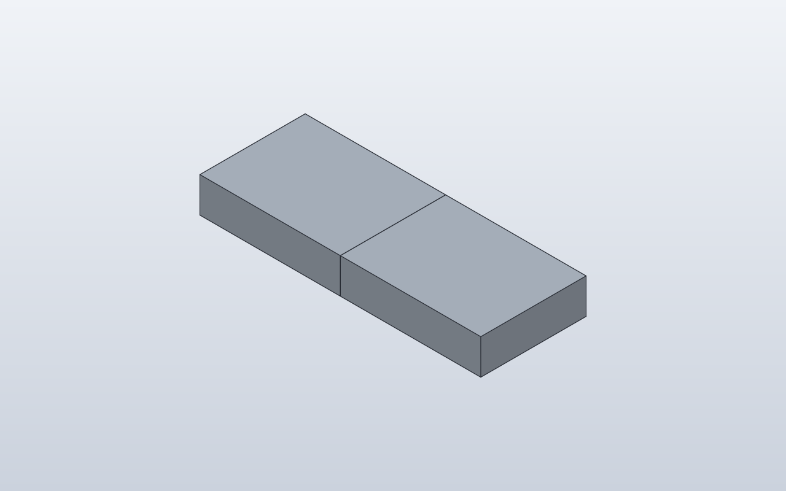

Forge qualification case · PASS · Q1 Q2 Q3 Q4 Q6 · Q5 N/R
Place one component relative to another
Verify reuse of one component definition while a child occurrence is placed relative to a meaningful face of the parent.

1. Forge contract
Public API
copy()/reusable model semantics; attach(parent=Anchor.RIGHT, child=Anchor.LEFT)
Internal Forge model
Two ModelInstance occurrences sharing one ModelDefinition; the second carries an Attachment to the first.
SolidCraft lowering
One component definition, one copied occurrence and joint.create(type='rigid') using the RIGHT and LEFT native references.
2. Native verification
Expected result
Two identical blocks touch face-to-face and retain one shared editable component definition.
Parametric mutation
No mutation in this base case; parametric joint distance and moving anchor geometry are isolated below.
Evidence

3. Results
Baseline · 2 bodies · measurements.json
Parameters
| Name | Value |
|---|---|
Block_length | 40.0 |
Block_width | 30.0 |
Block_height | 10.0 |
Bodies
| Body | BBox min | BBox max |
|---|---|---|
| Block | [-20, -15, 0] | [20, 15, 10] |
| Block (Block:2) | [20, -15, 0] | [60, 15, 10] |
4. Generated native relationship/command path
[
{
"command": "joint.create",
"params": {
"type": "rigid",
"name": "Attach Block:2 to Block:1",
"a": {
"occurrence": "Block:1",
"face": [
20.0,
0.0,
5.0
]
},
"b": {
"occurrence": "Block:2",
"face": [
20.0,
0.0,
5.0
]
}
}
}
]5. Reference models
These comparisons clarify concepts; Forge does not promise API compatibility with them.
- BOSL2: Comparable to attach(RIGHT, LEFT): the relationship is described by parent and child attachment references.
6. Fixture source
class Block:
length = 40.0
width = 30.0
height = 10.0
def build(self):
return Box(self.length, self.width, self.height)
class TwoBlocks:
def build(self):
left = Block()
right = Block().attach(
left,
parent=Anchor.RIGHT,
child=Anchor.LEFT,
)
return left + right
TwoBlocks()